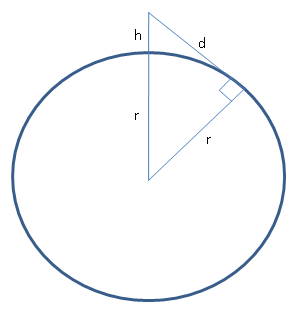
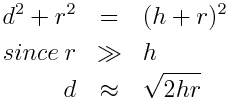
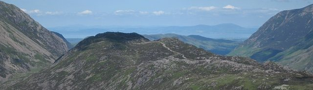

How far is the Horizon?
Recently I was on holiday. On the beach looking out to sea, I wondered how far away is the horizon? With Pythagoras theorem it's easy enough to calculate:
 
The radius of the earth is roughly 6.4x106m, and a person is say 2m high, so the horizon is about 5km away. Quite near really. If you went up on some cliffs which were 50m high you could see for about 25km.
Karl Hahn describes a really nice adaptation of this idea to measure the radius of the earth. You travel to Berkeley California, hike up Claremont Canyon, and note the point at which the top of the Golden Gate Bridge is coincident with the horizon. You need a pocket altimeter with you though, to measure your height.
A more general approach, is to measure the visible height of a tall object, say a building or a ships mast, as it disappears over the horizon. This measurement technique has been applied in the modern era, though does not appear to have been used in antiquity despite the measurement technique being quite feasible.
One of the difficulties is that, even on a clear day, the distance you can see is limited by contrast reduction due to airlight. Basically light from the sun is scattered off the air into your line of vision, which reduces the contrast of a distant object. When the contrst falls to about 2%, you can no longer distinguish the object from it's background. On an exceptionally clear day you may be able to see about 50km. It's this effect which makes distant mountains fade into the background, as seen in this photo by Ann Bowker:
